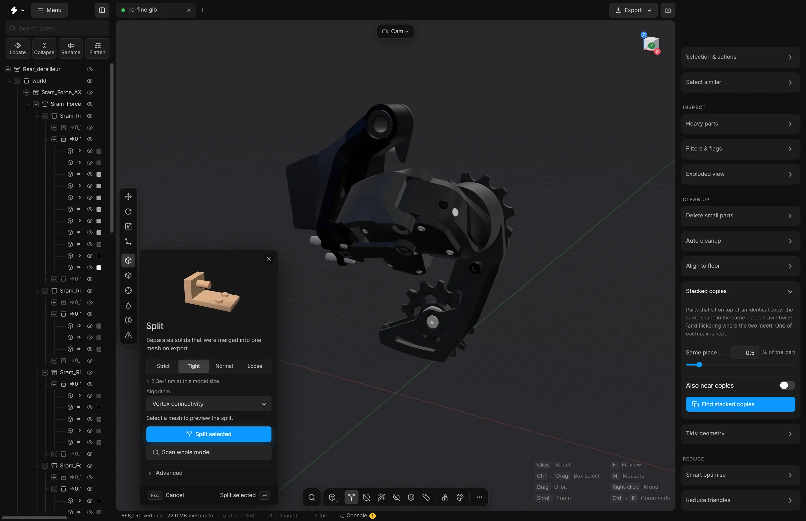

Split
Take apart a mesh that arrived as one piece but is really several separate solids, so each can be selected on its own.
Some files arrive with several solid pieces fused into one part: a bracket, its pin and two bolts as a single row in the tree. You cannot hide, delete or simplify one of them without the others. Split finds the pieces that do not touch and makes each one a part of its own.


When to use it
When clicking one thing selects several things that are clearly separate objects. An STL file, for example, holds a whole model as a single mesh.
Steps
- Select the part that should come apart.
- Press X, or click Split on the bottom toolbar. The panel opens.
- Read the preview line in the panel. It says what the split would produce.
- Press Split selected, or Enter.
- The part is replaced by its pieces in the tree. A message says how many parts were made.
To check every part of the model at once, press Scan whole model instead.
What the options mean
The four buttons at the top set how readily pieces are told apart:
- Strict
- The most pieces. Nothing is joined. Use it if you suspect the file has doubled points along its edges.
- Tight
- The default. Points that are exact duplicates are joined, which keeps one solid whole along its sharp edges without joining neighbouring solids.
- Normal
- Also joins points that are a tiny distance apart, to allow for small rounding differences.
- Loose
- Joins points within 0.1% of the model’s size, so solids that touch are joined on purpose. Use it when you want fewer, larger parts.
Algorithm chooses how connection is decided:
- Vertex connectivity
- The default. Triangles that share a corner point belong together.
- Edge connectivity
- Stricter. Triangles belong together only when they share a whole edge, so solids that meet at a single point stay separate.
- Spatial proximity (AABB)
- Groups triangles by where they are in space instead of how they are connected. Useful when the connections in the file are fused but the solids are still apart.
- Hybrid (vertex + spatial)
- Vertex connectivity first, then a second pass by position on any piece that still holds more than half of the mesh.
Undo
One split is one undo step: CtrlZ puts the part back together.